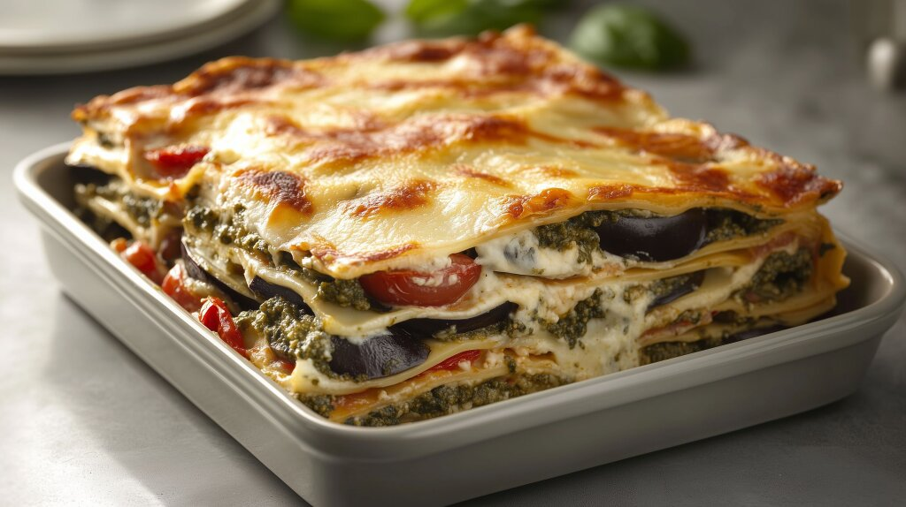

Lasagne

a slice of delicious lasagne
Ingredients
- Flour
- Eggs
- Salt
- Butter
- Milk
- Bay Leaves
- Tomato Passata
- Tomato Paste
- Fresh Basil
- Olive Oil
- Pine Nuts
- Beef Mince
- Pork Mince
- Onions
- Garlic
- Celery
- Red Wine
- Garlic
- Dried Chilli Flakes
- Freshly Ground Pepper
- Dried Rosemary
- Nutmeg
- Parmesan Reggiano
Steps
- On a clean surface, place approx 2 cups of flour and a generous pinch of salt in a small mound and make a well in the middle.
- In the flour well place 3 whole eggs and 2 egg yolks, using a form mix the eggs and then gradually incorporate the flour into the egg mix using the fork at first and then your clean hands.
- Knead the dough for about 2-5 mins until it forms a smooth dough.
- Cover the dough with a clean, damp tea towel and let it rest for approx 5-10mins.
- In a large heavy bottomed pot heated to medium-high temp, add approx 1/4 cup olive oil and finely chopped onions and celery cooking until onions become translucent.
- Add finely minced garlic to pot and cook for approx 2mins, stirring occasionally.
- Add 2tbsp of Dried Chilli Flakes, 1tbsp of Freshly Ground Pepper, and 1 tbsp of Dried Rosemary and stir into mixture letting cook for about 1-2mins or until fragrant.
- Add 3tbsp of Tomato Paste to pot and stir cooking until it becomes a deep red colour.
- Add 500g Pork Mince and 500g Beef Mince to pot, cooking until the colour changes.
- Pour in 1 cup of Red Wine to pot, deglasing anything stuck to the bottom of the pot with a wooden spoon.
- Pour in 750ml of Tomato Passata into pot and mix thoroughly, then add 4 Bay Leaves to the mixture.
- Bring mixture in pot to a boil, then reduce heat to a gentle simmer with the lid on but not quite covering the pot entirely.
- Preheat oven to 180 degrees celsius, convert this to farenheit or kelvin if you must.
- Using a rolling pin, or a pasta roller if you have one, roll out the pasta dough on a clean floured surface to approx 3mm thickness and sufficient surface area for 2-3 complete sheets that will fit in dish you are using for your lasagne.
- In a new saucepan, add 100g of Butter and melt using a medium-high temp.
- Add 1tbsp of Freshly Ground Pepper, and 1tsp of grated Nutmeg to butter in pan.
- Add 1/2 cup of flour to melted butter and stir to incorporate.
- Pouring in approx 1 cup of milk at a time and stirring to incorporate with melted butter and flour mixture, only adding the next cup of milk when the mixture is homogenous, until you have incorporated at least 1 ltr of milk making adjustments to suit your desired viscosity.
- Set the Bechmal sauce aside off heat with a lid resting on top.
- In a food processor add 1/2 cup of Pine Nuts, a large bunch of Basil leaves and stems, and 1/2 cup of Olive Oil and blend until smooth.
- In the Lasagne dish of choice, place enough of the Bolognese sauce to cover the bottom of the dish.
- Place the first sheet of Lasagne on top of the Bolognese sauce in the dish.
- Spoon about 1/2 to 1/3 of the pesto on top of the Lasagne sheet, adjusting depending on how many layers of Lasagne you are making.
- Place an even layer of Bechmal sauce into the Lasagne dish approx 1 1/3 cups of Bechmal depending on how much you love Bechmal.
- Grate Parmesan Reggiano over the Bechmal sauce in the Lasagne dish.
- Repeat the last 5 steps until you've run out of Lasagne sheets.
- Place the Lasagne dish into the pre-heated oven for approx 30-45mins or until the top of the Lasagne is sufficiently cooked for your personal preference.
- Remove the Lasagne from the oven and allow to rest for 15-20mins before serving.